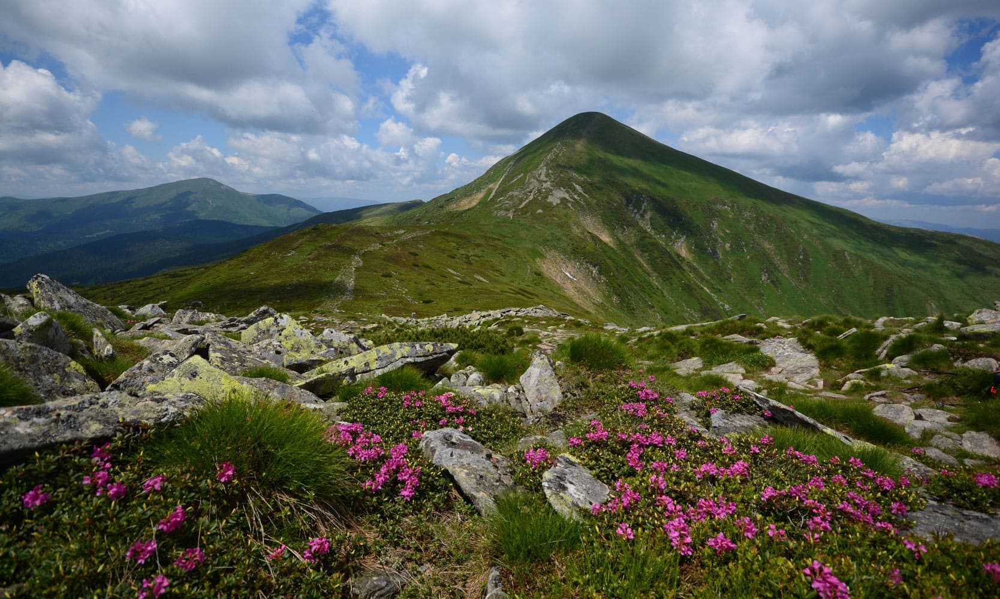

Чорногора — найвищий гірський хребет Українських Карпат, який включає такі вершини, як Говерла (2061 м) та Піп Іван Чорногірський. Це ідеальне місце для походів та споглядання природи.
Чорногора славиться своєю флорою і фауною, а також альпійськими луками та кришталево чистими річками.
